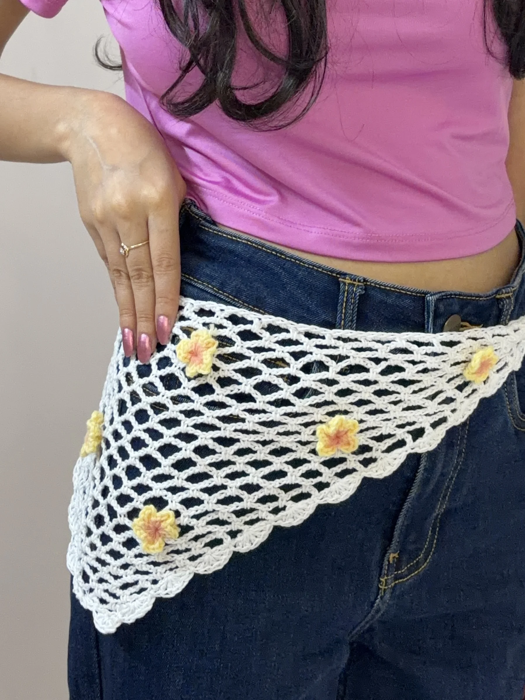

Free Crochet Pattern
Easy Crochet Bandana Pattern for Beginners | Free Written Pattern + Video Tutorial
This easy crochet bandana is a quick and beginner-friendly summer accessory made with a simple mesh pattern. You can keep it simple or add tiny crochet flowers to make it your own.

About the Pattern
This crochet bandana is a simple summer accessory that works up quickly and is easy to customize. The lightweight mesh design makes it perfect for warm weather, and you can adjust the length of the ties to get the fit you want.
I also added tiny crochet flowers to mine for a little extra detail, but you can leave them off or add as many as you like.
Video Tutorial
Prefer to crochet along with a video? Watch the full tutorial on YouTube.
Materials
- Lightweight cotton yarn
- 2.5 mm crochet hook
- Stitch markers
- Scissors
- Yarn needle
- Optional: eyeshadow or blush for shading the flowers
Want to shop the materials?
Check out the materials here →Pattern Details
- Skill Level: Beginner
- Time: 15–30 minutes
- Yarn: Weight 2 cotton yarn
- Hook: 3 mm
Abbreviations
Written Pattern
How to Crochet the Bandana
1. Foundation
Start with a slip knot and chain 7.
Make 1 dc into the very first chain.
2. Row 2
Chain 7 and turn.
- Make 1 sc into the loop from the previous row.
- Chain 5.
- Count 3 chains from the previous row’s dc and make 1 dc into that chain.
3. Row 3
Chain 7 and turn.
- Make 1 sc into the first loop.
- Chain 5.
- Make 1 sc into the next loop.
- Chain 5.
- Count 3 chains from the previous row’s dc and make 1 dc into that chain.
4. Continue the Pattern
Continue increasing in the same way, adding one loop per row.
Start each row with chain 7, then work 1 sc into each loop, with chain 5 between the loops. At the end of the row, chain 5 and make 1 dc into the 3rd chain from the previous row.
I used 26 rows for my bandana.
5. Optional Lace Border
For the lace border, work 5 dc into the space between two rows.
In the next space, make 1 sl st.
Repeat these two steps along both slanted sides of the bandana.
6. Ties
Chain 40 for each tie.
You can make the ties longer or shorter depending on how you want your bandana to fit.
7. Tiny Crochet Flower
Chain 2.
In the 3rd chain from the hook, work:
(2 dc, ch 2, sl st)
Repeat the same stitch combination 2 more times in the same stitch to create a small 3-petal flower.
Chain 1 and cut the yarn.
8. Finish the Top Edge
Attach yarn to the top edge of the bandana.
Work 3 sc into each mesh space across the top edge.
Chain 40 to create the second tie, then make another tiny flower if you would like to add the same detail to this side.
9. Optional Flower Appliqués
For the larger flower appliqués, make a magic ring.
Chain 2, then work:
2 dc, ch 2, sl st into the magic ring.
Repeat this 5 times to create a 5-petal flower.
Close the magic ring and chain 1. Cut the yarn, leaving a tail for sewing.
Sew the flowers onto the bandana wherever you like. You can also use a little eyeshadow or blush to add soft shading to the flowers.
10. Finish
Weave in any remaining ends and your crochet bandana is ready to wear.
A Little Note from Stitchy Days ♡
Hi there
Thank you so much for trying one of my crochet patterns! I’m so happy to have you here, and I hope you enjoy making this project as much as I enjoyed creating it.
If you make something using this pattern, I’d love to see it! Feel free to tag Stitchy Days when you share your finished project. Seeing your creations means so much to me as I continue growing this little crochet corner.
Thank you for supporting my work and happy crocheting! ♡
